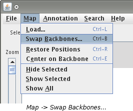
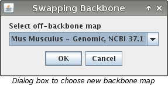
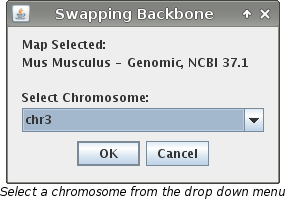

Swap Backbones
Swap backbones allows you to change which map is the backbone map. The choices are any off-backbone
map that is loaded. When an off-backbone map is loaded it is aligned to the backbone map. Swapping
backbones allows you to view the same data but with respect to a different backbone map. All of the
data that is previously loaded will be reloaded to align to the new backbone. The new backbone map
will be opened in a new window and the original window will stay open also.
How to Swap Backbones
- Select "Map -> Swap Backbones..." or use the keyboard shortcut
"CTRL + B".

- If you have only 2 maps loaded, VCMap will make the swap automatically. The new backbone map will
be the previously loaded off-backbone map. Continue on to the next step. If you have more than
two maps loaded, a dialog box will appear asking which off-backbone map you would like to become
the new backbone map. Make a choice in the drop down menu and click "OK".

- A new VCMap window will open along with a dialog box labeled "Swapping Backbone".
The box will ask you to choose which chromosome you wish to load as the new backbone map. Your
choices however will be limited to only chromosomes that were loaded on the off-backbone map.
The chromosomes will be in a drop down menu. Pick the chromosome you want and then click
"OK".

Note: To load a chromosome that is not listed, please consult the
Load a Map page.
Additional Notes
- It is possible that the new backbone map will not align correctly to one or more loaded maps.
If this is the case, VCMap will give a warning message indicating that no data has been loaded
for the map.
- The original window will remain open. The new backbone map will be loaded into its own separate
window.
- While the swap is taking place, the new window will appear blank. Be patient as it takes
a few moments for the new data to load.
See Also